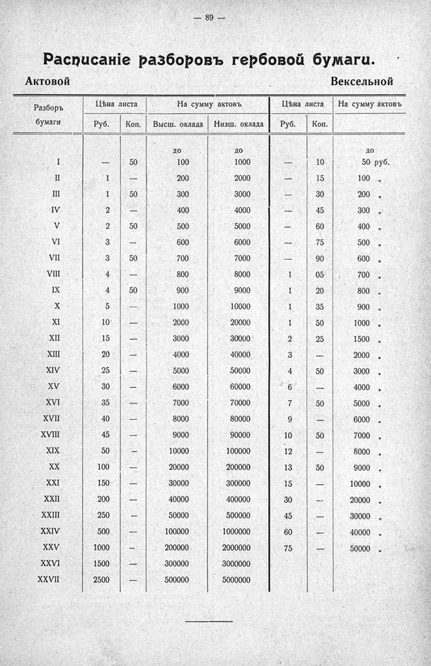

Лист источника 135
Скан

Распознанный текст
— 89 —
Расписаніе разборовъ гербовой бумаги.
Актовой Вексельной
Разборъ Цѣна листа На сумму актовъ. Цѣна листа На сумму актовъ
бумаги Руб. Коп. Высш. оклада Низш. оклада Руб. Коп.
до до до
I — 50 100 1000 — 10 50 руб.
II 1 — 200 2000 — 15 100 „
III 1 50 300 3000 — 30 200 „
IV 2 — 400 4000 — 45 300 „
V 2 50 500 5000 — 60 400 „
VI 3 — 600 6000 — 75 500 „
VII 3 50 700 7000 — 90 600 „
VIII 4 — 800 8000 1 05 700 „
IX 4 50 900 9000 1 20 800 „
X 5 — 1000 10000 1 35 900 „
XI 10 — 2000 20000 1 50 1000 „
XII 15 — 3000 30000 2 25 1500 „
XIII 20 — 4000 40000 3 — 2000 „
XIV 25 — 5000 50000 4 50 3000 „
XV 30 — 6000 60000 6 — 4000 „
XVI 35 — 7000 70000 7 50 5000 „
XVII 40 — 8000 80000 9 — 6000 „
XVIII 45 — 9000 90000 10 50 7000 „
XIX 50 — 10000 100000 12 — 8000 „
XX 100 — 20000 200000 13 50 9000 „
XXI 150 — 30000 300000 15 — 10000 „
XXII 200 — 40000 400000 30 — 20000 „
XXIII 250 — 50000 500000 45 — 30000 „
XXIV 500 — 100000 1000000 60 — 40000 „
XXV 1000 — 200000 2000000 75 — 50000 „
XXVI 1500 — 300000 3000000
XXVII 2500 — 500000 5000000